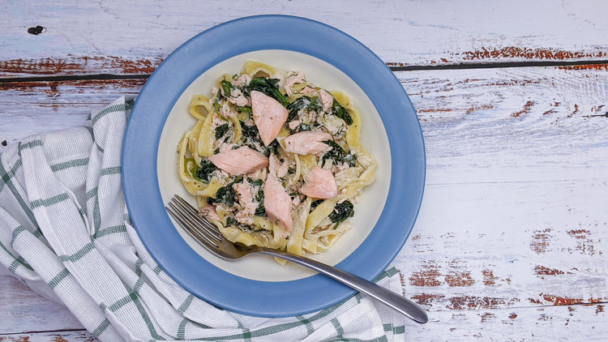

Final Fantasy XIV - Creamy Salmon Pasta

"Filling homemade pasta topped with tender, flaky salmon and fresh spinach, all smothered in a rich, creamy sauce." - Eorzea Database
- Prep time: 30 minutes
- Cook time: 20 minutes
- Dough resting time: 1 hour
- Yields 2 servings
Home made pasta
| US |
Ingredients |
Metric |
| 1/3 cup |
00 flour |
50 g |
| 1/3 cup |
semolina |
50 g |
| 0.5 tsp |
kosher salt |
3 g |
| 1 |
egg |
1 |
- Put the dry ingredients in a large bowl and stir to combine.
- Add the eggs and gradually incorporate the dry ingredients until a ball of dough forms.
- Knead the dough until it becomes smooth about 5 minutes.
- Shape the dough into a ball and cover it to rest and hydrate for 1 hour.
- Roll out the dough evenly as thin as you prefer and then cut it into strips.
- Cook the pasta in salted boiling water until done, about 1 to 2 minutes.
- Reserve some of the pasta cooking water for later.
Poached salmon
| US |
Ingredients |
Metric |
| 1 tsp |
kosher salt |
6 g |
| 1 tbsp |
peppercorns |
12 g |
| 1 clove |
garlic |
1 clove |
| 3 sprigs |
dill |
3 sprigs |
| 1/2 |
lemon, sliced |
1/2 |
| 7 oz |
salmon filet |
200 g |
- Place all the ingredients except for the salmon in a small pot filled halfway with water.
- Bring the pot to a boil and simmer for 8 minutes.
- Place the salmon in the pot, cover and simmer gently for 5 minutes.
- Break the salmon into flaked pieces.
Creamy sauce
| US |
Ingredients |
Metric |
| 3.5 oz |
goat cheese |
100 g |
| 1 tsp |
kosher salt |
6 g |
| 1 tbsp |
cream |
15 mL |
| 1 handful |
dill |
1 handful |
| 1 tbsp |
lemon juice |
1/2 |
| to taste |
pepper |
to taste |
- Put all the ingredients in a small bowl and stir to combine.
Assembly
| US |
Ingredients |
Metric |
|
cooked pasta |
|
|
poached salmon |
|
|
creamy sauce |
|
| 3.5 oz |
spinach |
100 g |
| to taste |
pepper |
to taste |
- Place all the ingredients except the pepper in a pan set over medium low heat.
- Stir to combine all the ingredients, coat the pasta in sauce and wilt the spinach.
- If the sauce is thick, loosen it with a splash of the pasta cooking water.
- Serve the pasta and garnish with pepper and pieces of flaked salmon.
Original recipe